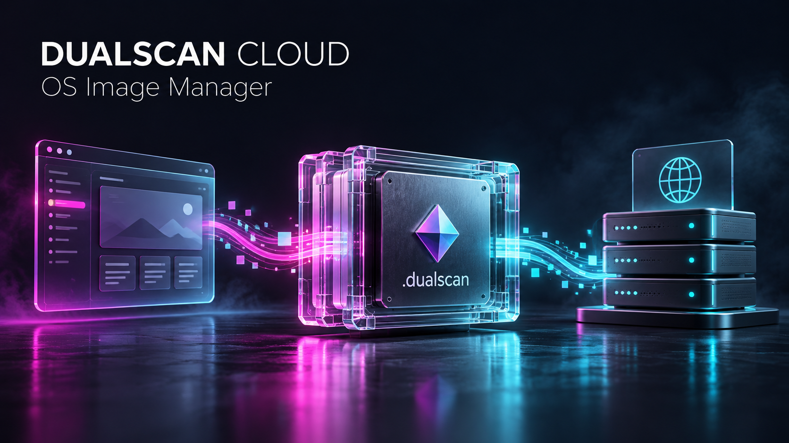
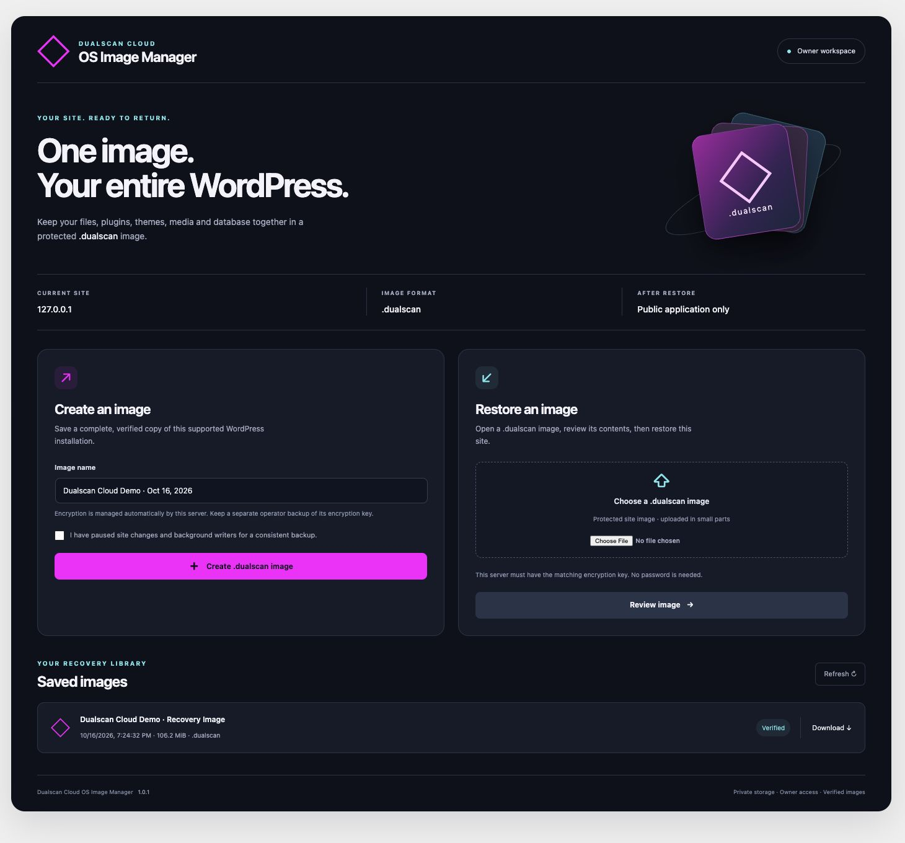
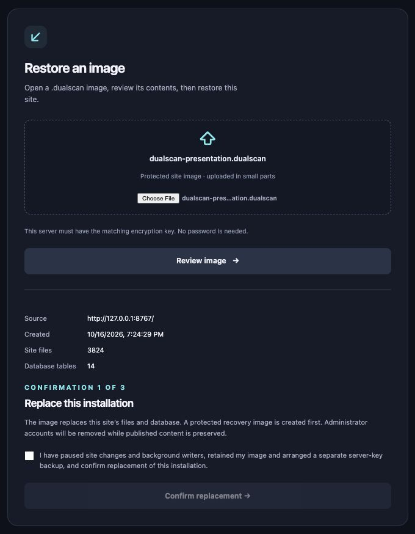
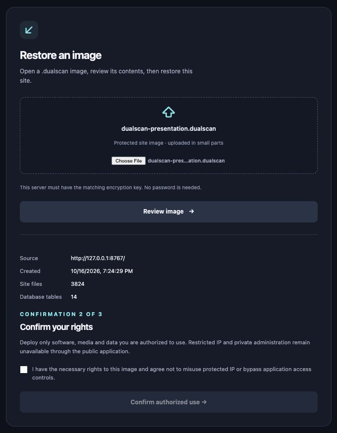
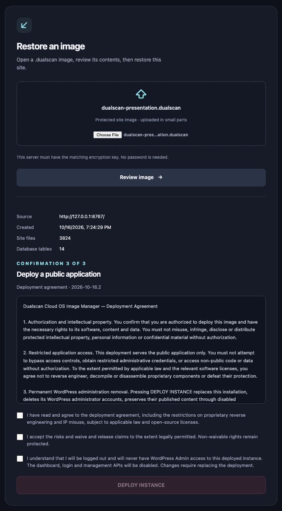

Capture
Keep supported site files and database tables together in one application image.

One encrypted .dualscan image carries supported site files, plugins, themes, media and database records. Verify the complete image, review three deliberate confirmations, then run the public application with WordPress web administration removed.
Keep supported site files and database tables together in one application image.
Authenticated encryption uses a private server key, with no password prompt or embedded secret.
Authenticate and check paths, file hashes and database rows before public mutation.
Save a recovery point, remove administrator accounts and serve the public runtime.
The publisher's source site remains editable. The plugin-folder name identifies a random private key outside the website; destination servers need the matching key provisioned separately.

Replace the installation. Confirm authorization. Review the agreement and permanent loss of WordPress administration. The final button stays disabled until every required acknowledgment is accepted.



Captured from the running 1.0.1 application inspecting a real encrypted image. Final agreement checkboxes were left unchecked. No deployment was submitted for these captures. Click any screen to view it full size.
Current source passed 41 engine tests, 21 keyring tests and 10 independent keyring checks. Wrong keys and wrong folder contexts are rejected. Keys are never included in the plugin, source, browser scripts or images. Keep the operator key backup.
The source declares GPL-2.0-or-later. Hosted-instance access controls are separate from the right to study, modify and redistribute covered code. The draft deployment agreement preserves applicable open-source and non-waivable rights.
Version 1.0.1 targets supported single-site WordPress installations and local InnoDB-backed content, with matching destination URL and table prefix. External services and server infrastructure are provisioned separately. Docker/Nginx templates need target-host validation. This public source release is licensed under GPL-2.0-or-later. Source publication does not deploy a hosted instance or constitute WordPress.org directory submission.